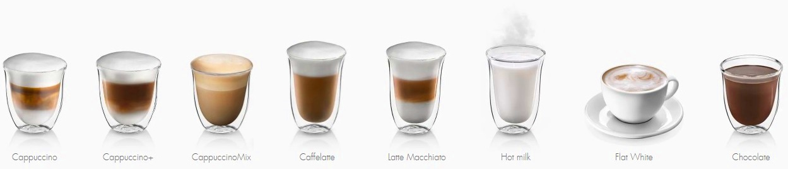

Отличия между разными видами кофейных напитков
Большинство людей ежедневно, а иногда и несколько раз в день пьют кофейные напитки. Некоторые любят Американо, кто-то смакует Латте, другие бахнут две-три чашечки эспрессо за один раз. Все эти напитки по-своему вкусные. Давайте же разберемся в чём отличие.
И так существует более 24 основных рецептов приготовления кофе, которые пьют большинство людей. Все они готовятся на основе зернового, молотого или растворимого кофе с добавлением молока, молочной пены, алкоголя, сока или сиропов.
Готовим кофейные напитки на автоматической кофемашине ROOMA A9s
8 основных и самых популярных напитков из кофе:
Классические кофейные напитки.
Ристретто – для тех, кто спешит и кому нужна быстрая доза кофеина. Самый маленький по объёму кофе. По оригинальному рецепту на 20 мл воды идёт аж 8 грамм кофе и подаётся чистая вода в отдельном стакане, чтоб человек мог запить ядерную смесь.
Эспрессо - один из самых распространённых видов кофе. Объём – 40 мл воды на 8 грамм кофе. По ошибке его часто называют «експрессо» потому что многие думают, что это «быстрый» кофе. Но это не так. Эспрессо в переводе с итальянского означает давить, выжимать, отжимать. Из молотого кофе в прямом смысле слова выжимают весь кофеин.
Доппио – кофе для экстрималов. Это двойная доза эспрессо. Сердце начинает биться быстрее, вы чувствуете прилив сил и энергии. Мозг начинает быстро решать любые задачи и за день вы успеваете сделать в два раза больше дел.
Американо – то же самое, что и эспрессо, только с добавлением большего количества воды. Примерно 100-120 мл воды для семи-восьми грамм кофе. Подойдет для тех, кто хочет взбодриться, но не хочет выпить напиток одним глотком.
Кофейные напитки с добавление молока.
Макиято – кофейный напиток на основе эспрессо и горячего молока. Некоторые уверены, что по оригинальному рецепту необходимо добавлять эспрессо в горячее молоко. Тогда ингредиенты перемешиваются и приобретают светло-коричневый цвет. Другие считают, что к эспрессо необходимо сверху добавить чайную ложку мягкой, нежной пены взбитого молока. Рекомендуем попробовать оба варианта.
Флэт уайт (флэт вайт) – доппио для тех, кто не спешит, а хочет насладиться кофейным вкусом и ароматом. Флет уайт это двойная порция эспрессо (доппио) в которую добавляется 90-100 мл взбитого молока.
Капучино – занимает второе место в ТОПе кофейных напитков, которые пьёт автор статьи. Подаётся в широких чашках объёмом до 280 мл. Изюминкой капучино является, то что в порцию кофе добавляется большое количество взбитого молока. Напиток получается мягким и нежным. Рекомендуем пить его в кругу друзей холодными вечерами.
Латте - самый вкусный кофейный напиток (по мнению автора статьи) готовится на основе 3 ингредиентов (кофе, горячее молоко и взбитое молоко). Если вам приготовят его в прозрачном, высоком стакане, то он удивит вас не только вкусовыми качествами, но и очень красивой структурой напитка. Внизу будет темный слой нежного и вкусного кофе, второй слой - это горячее молочко и завершающий слой - это взбитое молоко. Часто в него добавляют различные сиропы. Иногда сверху не помешает немного сливок. Латте подойдет как для пешей прогулки по парку, долгих посиделок в кафе или в любом другом месте.
В следующей статье мы расскажем вам про такие напитки как Кофе по-Венски, Кофе Гляссе, Мокко, Кон Панна и другие. Так же мы предлагаем Вам купить вкусный кофе в нашем интернет-магазине, наши менеджеры с удовольствием помогут выбрать подходящий вариант.